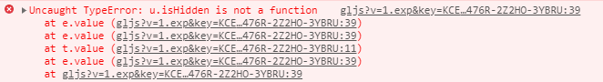

导语：虽然已知for…in会遍历对象原型链上的属性，但心想用于字面量创建的对象应该没有什么大问题，于是便弃hasOwnProperty于不顾，最终被工单教做人了。在修复中总结了几个可以让遍历对象更加优雅的方法。
for…in踩坑复盘
能不能去掉hasOwnProperty？
for...in常用于遍历对象或者数组，比如1
2
3
4
5
6
7
8
9
10
11
12const obj = {
a: 1,
b: 2
};
for (const key in obj) {
console.log(key, obj[key]);
}
// 输出
// a 1
// b 2
我们都知道for...in会遍历原型链上的属性，所以一般会结合hasOwnProperty来判断属性是否在对象自身上，而不是在原型链上。1
2
3
4
5for (const key in obj) {
if (obj.hasOwnProperty(key)) {
console.log(key, obj[key]);
}
}
可每次都要多增加一行代码，多一个缩进，实在麻烦，能不能偷懒不加hasOwnProperty？
于是我动起了小心思，使用字面量创建的对象或者数组，不是类的实例，原型链上干干净净的，那遍历的时候也没必要判断了吧。于是就在遍历字面量对象时放心大胆地把hasOwnProperty抛弃了。
工单打脸
我负责的产品是API，用户在自己的页面应用中引入使用。某天，有用户反馈若同时引入我家API和另一个脚本库就会引发报错：

调试发现报错发生在：1
2
3
4
5
6for (const key in renderLayers) {
const layer = renderLayers[key];
if (!layer.isHidden()) {
// ...
}
}
renderLayers是一个数组，这里原本是遍历可渲染图层进行操作，而图层对象都有isHidden方法，为何报错呢？原因是用户另引入的脚本对Object、Array、String等基础引用类型的原型链做了扩展，加入了一些方法。所以在for...in遍历renderLayers时，也遍历到了addRange、clear这些属性，layer则赋值为一个function，而不是图层对象。1
2
3
4
5
6
7
8
9
10
11
12
13
14
15
16
17
18
19
20
21
22Object.extend = function(dest, source, replace) {
for(var prop in source) {
if(replace == false && dest[prop] != null) { continue; }
dest[prop] = source[prop];
}
return dest;
};
Object.extend(Array.prototype, {
addRange: function(items) {
if(items.length > 0) {
for(var i=0; i < items.length; i++) {
this.push(items[i]);
}
}
},
clear: function() {
this.length = 0;
return this;
},
// ...
}, false);
避坑指南
如上所述，只能开始内部大清理，所有使用for...in而没有带hasOwnProperty的地方都需要进行改造。除了加上hasOwnProperty进行判断之外，视具体情况还可以使用以下方法，让你的代码更加优雅：
1. 数组尽量使用forEach进行遍历
比如引发报错的这一段，renderLayers是一个数组，直接使用forEach进行遍历即可：1
2
3renderLayers.filter(layer => !layer.isHidden()).forEach(layer => {
// ...
});
2. 对象深拷贝尽量使用解构赋值
for...in可遍历对象属性实现一一赋值完成简单的对象深拷贝，这种操作可以用解构赋值来实现，更简单。1
2
3
4
5
6
7
8
9
10function copy(obj) {
return {...obj};
}
const obj = {
a: 1
};
const objCopy = copy(obj);
console.log(objCopy);
// 输出：{a: 1}
3. 遍历键值可以结合Object.entries()和forEach
Object.entries()返回对象所有键值对组成的数组，再结合forEach即可完成遍历。若只是遍历对象的键或者值，可以使用Object.keys()和Object.values()。
在改造过程中，可以抽象出一个forIn方法作为工具函数，这样多处调用就可以省掉不少冗余代码啦~1
2
3
4
5
6
7
8
9
10
11
12
13function forIn(obj, callback) {
Object.entries(obj).forEach(entry => {
callback(...entry);
});
}
const obj = {
a: 1
};
forIn(obj, (key, value) => {
console.log(key, value);
});
// 输出：a 1
4. 若要使用break、return提前结束循环，需结合for...of
方法3虽好，但使用forEach没办法中断循环，这时候可以使用for...of，也是非常简洁的。1
2
3
4
5
6
7
8
9
10
11const obj = {
a: 1,
b: 2
};
for (let [key, value] of Object.entries(obj)) {
if (value > 1) {
break;
}
console.log(key, value);
}
// 输出：a 1